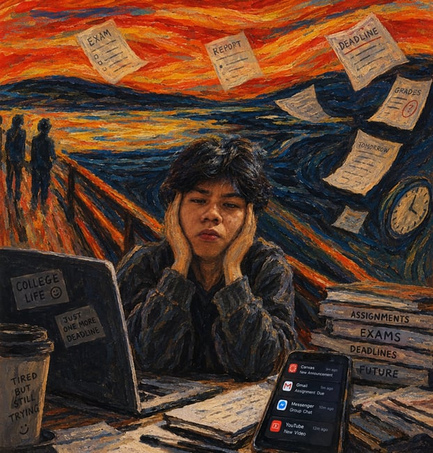
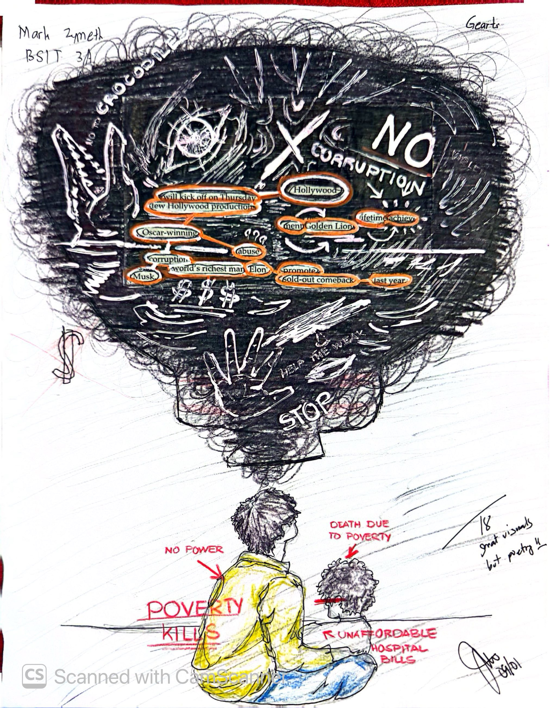
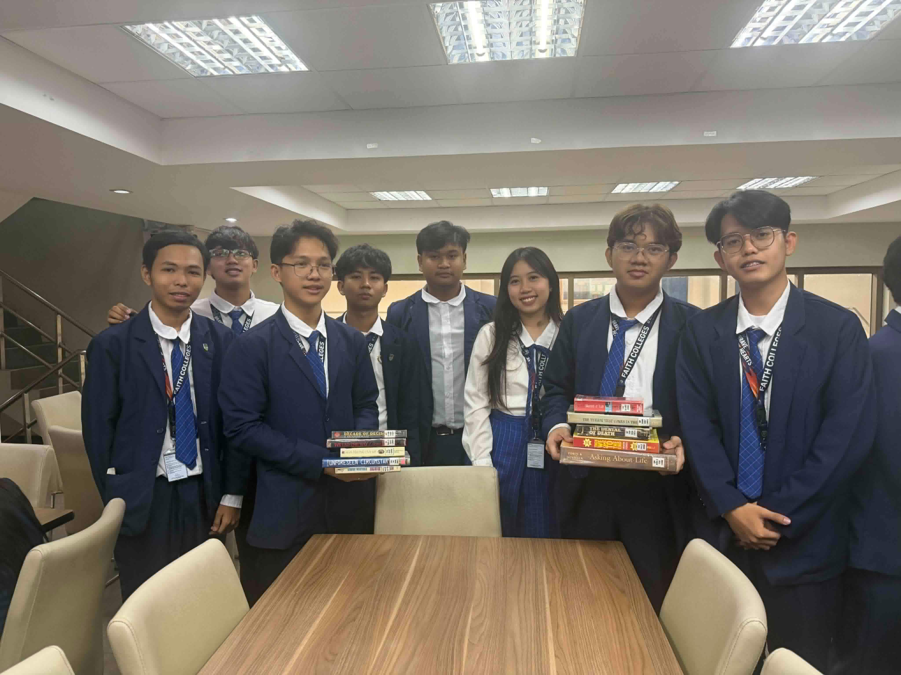
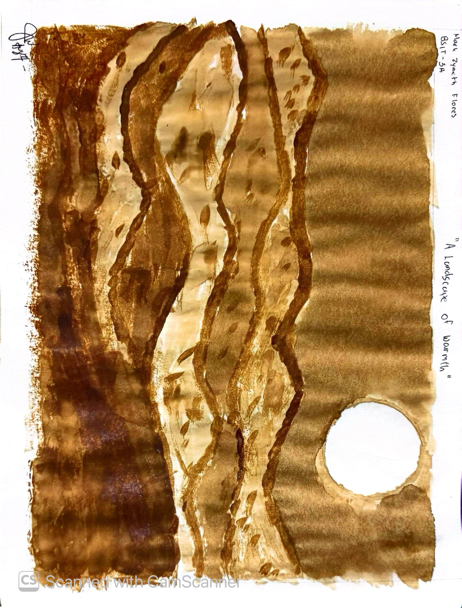
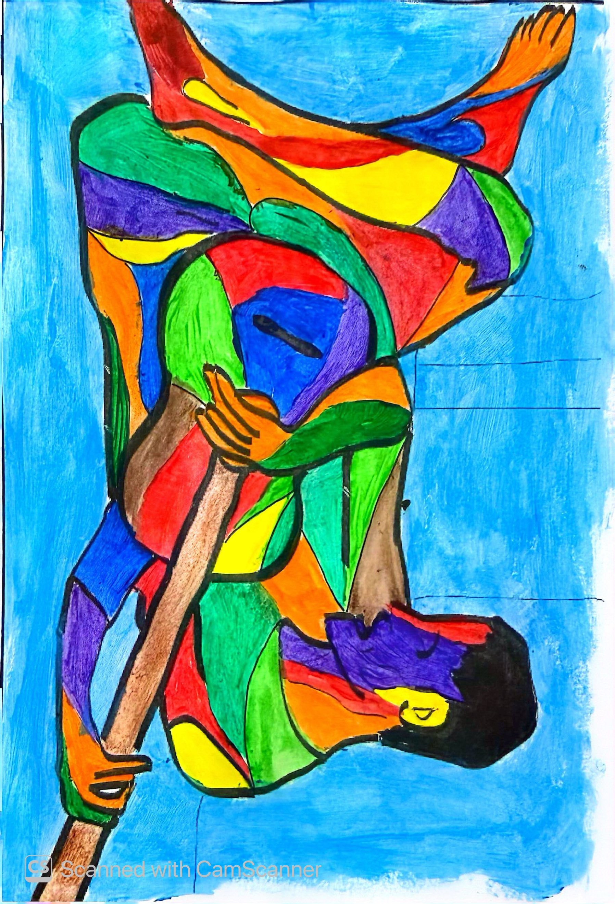
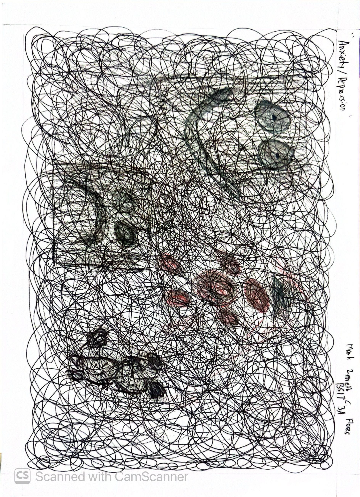
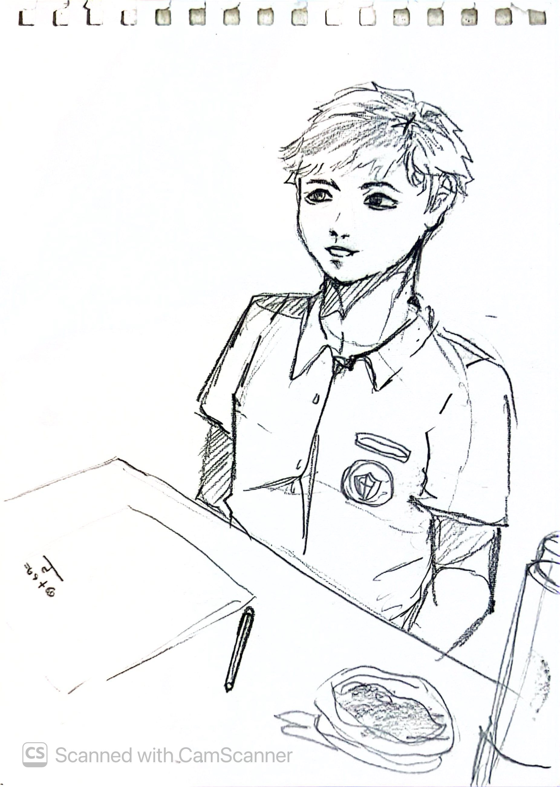
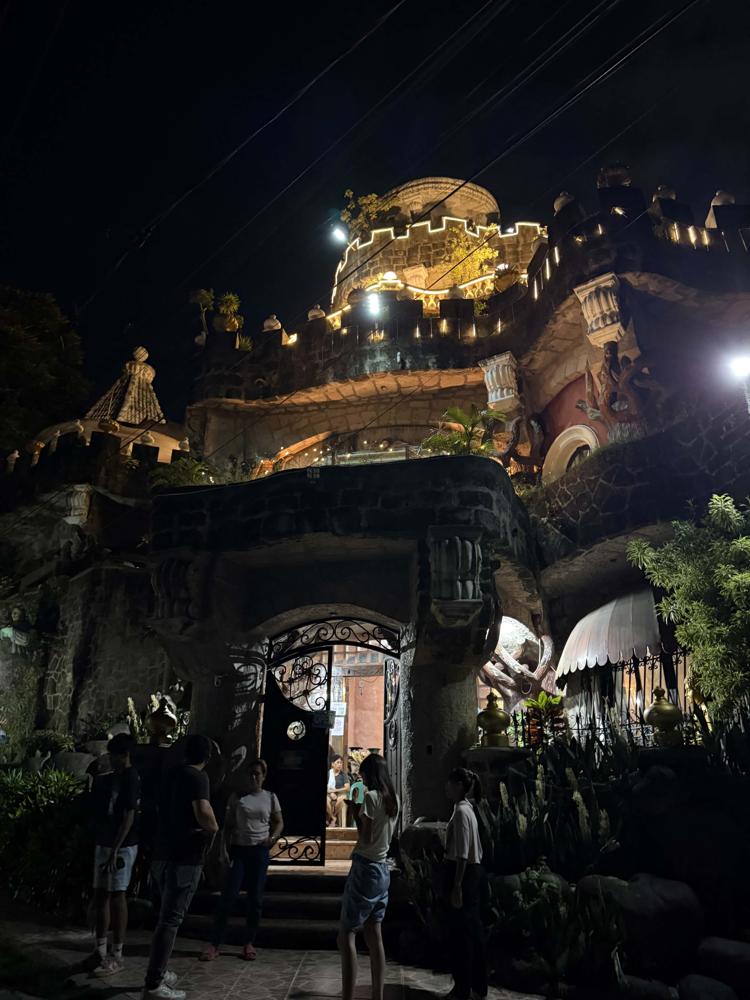
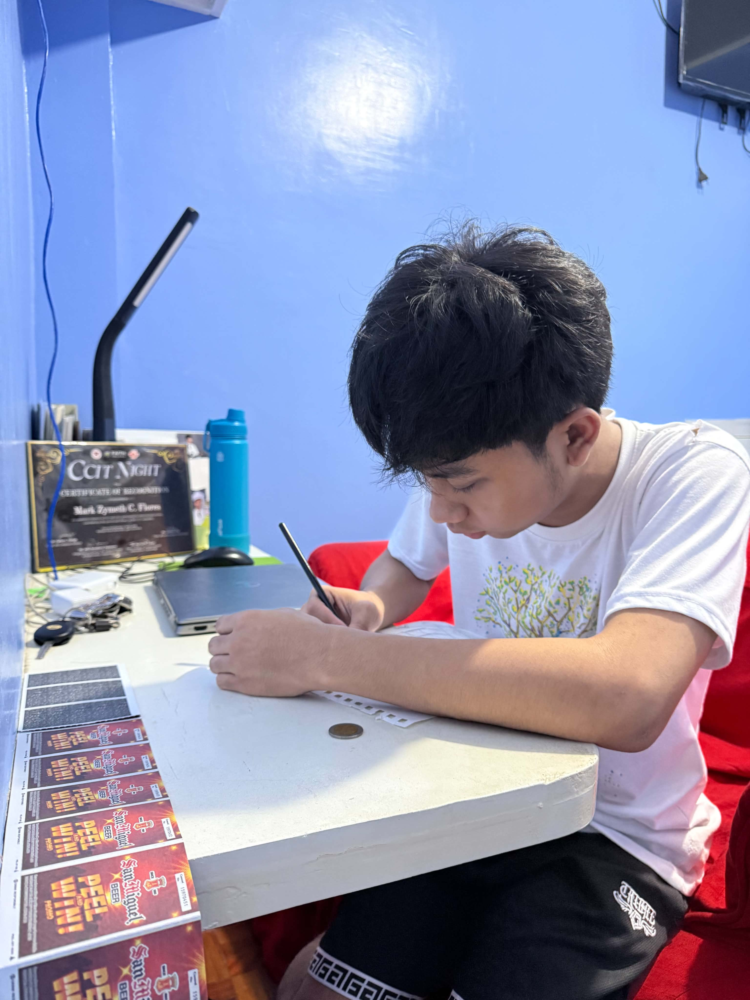
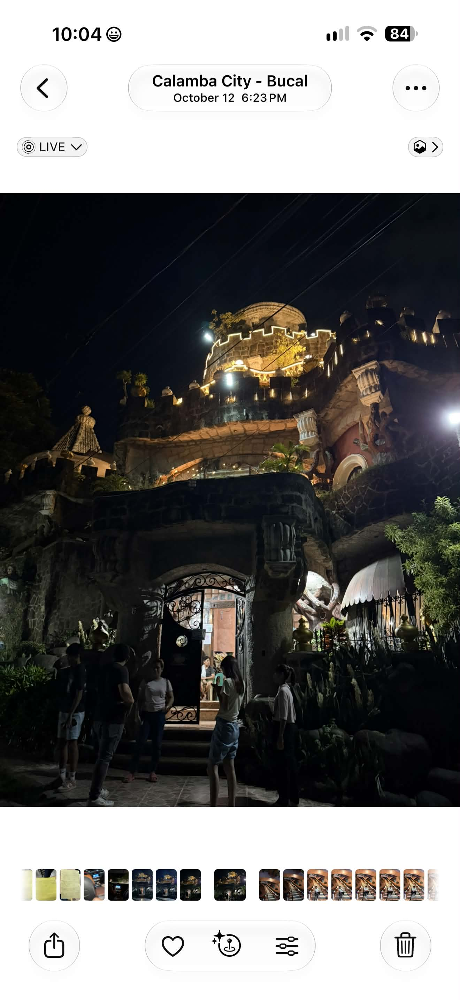

01
AI Art Appreciation
IndividualAI disclosure: [Explain how AI was used in this output.]
Hello, I'm
The Artist I Am Becoming
[Write 2 to 3 sentences about yourself and what this portfolio shows.]
Who am I becoming?
[Write 1 to 2 sentences about the outputs you made in GEARTS this semester.]

AI disclosure: [Explain how AI was used in this output.]

[One-line caption.]

[One-line caption.]

[One-line caption.]

[One-line caption.]

[One-line caption.]
[Write 1 to 2 sentences about why you chose drawing, dancing, and photography.]

[Describe the drawing and what it means to you.]
View proof in Appendix 1 →[Describe the dance and what it means to you.]
View proof in Appendix 2 →
[Describe the photo and what it means to you.]
View proof in Appendix 3 →Who am I becoming?
[Reflection paragraph 1]
[Reflection paragraph 2]
[Reflection paragraph 3]
[One sentence from your reflection.]
Mark ZymethProof of creation for each Part II work, arranged in the same order as Part II.

